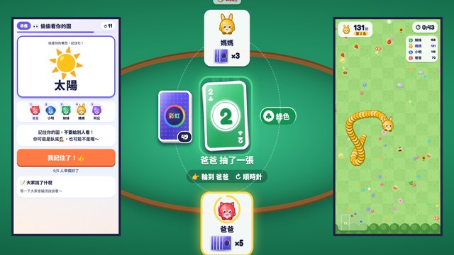
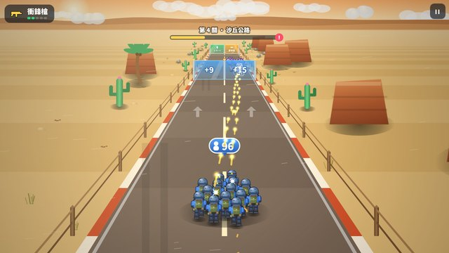

MW · Game Hall
遊戲大廳
選一款遊戲開始。每款都直接在瀏覽器執行，不需要安裝。
 1
1噗噗的遊戲小屋
向當年「好玩遊戲區」致敬的小遊戲合輯，打開就能玩。反應遊戲有下樓梯、接水果、敲地鼠、排球（可兩人對打）、疊疊高樓、釣魚（有魚類圖鑑）、打磚塊、節奏樂園（跟著音樂敲果凍鼓）、跑跑跑、毛毛蟲、開車車、對對碰（兩人同一台平板面對面）；益智遊戲有大家來找碴、翻翻記憶、十乘十方塊、泡泡龍、連連看、彩虹倒水瓶、消消樂、拼拼圖、走迷宮、下棋（黑白棋和五子棋，可對電腦或兩人對下）、聽聽看（用耳朵玩的記憶遊戲）；扮家家酒和畫畫有小廚房、小廚房第二季、換裝屋、著色本、小鋼琴、小寵物、蓋房子。首頁的噗噗會跟著玩過的遊戲長大，每款都記錄最高分，紀錄可以備份搬到別台。
 2
2大家一起玩
大家在同一個空間看同一台大螢幕，每個人拿自己的手機當手把。掃一次 QR code 就加入，第一個加入的人當房主，負責選遊戲。比賽有碰碰島、塗塗樂、搶果果、鬼抓人、雪球大戰、躲躲球、動物足球、搶椅子、跑跑賽道，合作有趕羊羊、一起救火、保護蛋糕，動腦有快問快答、你畫我猜、節奏拍拍、動物大富翁。每款都分小朋友模式和大人模式，也可以分隊。

L連線一起玩
每個人的手機都有自己的畫面：自己的手牌、自己的祕密詞、跟著自己跑的鏡頭。一支手機開房間，把房號或連結傳給大家，在同一個空間或各自在家都能玩；有電視的話也可以加一台當大螢幕。桌上有藏手牌的彩虹牌、偷偷藏寶互相挖的藏寶島；歡樂有找出臥底的誰是臥底、畫畫猜猜一路傳下去的傳畫接龍；動作有各自視角的貪食蛇大戰、只看得到燈籠一圈的迷霧尋寶；還有在自己手機上比快的腦力快手，和大家大喊指令一起開的太空船大作戰。每款都分小朋友模式和大人模式。
進入遊戲 → 3
3ABC Island
給幼兒園孩子的英文遊戲，由小狐狸 Pip 用語音帶著玩：描小寫字母、找開頭音、拼單字、單字圖卡，還能和 Pip 用英文聊天。完成就得到貼紙，貼在自己的小島上。
 4
4ㄅㄆㄇ 小島
給幼兒園孩子的注音符號遊戲，小企鵝小藍用台灣腔帶著玩：認識 37 個注音、聽音找注音、找出第一個音、把注音拼進格子，還有一二三四聲。完成就得到貼紙。
進入遊戲 → M
M123 小島
給幼兒園孩子的數學遊戲，小白兔小白用語音帶著玩：從數數、比多少開始，到分與合、湊十、看圖小故事學加減法、青蛙數線、幾個一盤的乘法、分給小熊的除法，還有九九、錢幣和二位數。還有餵動物、戳氣球、魚缸、湊數配對四款小遊戲。答錯會一步一步示範，完成就得到貼紙。
進入遊戲 → T
T棋牌桌遊
經典棋牌一次收齊：象棋、暗棋、西洋棋、五子棋、黑白棋、圍棋、跳棋、台灣 16 張麻將，撲克牌有新接龍、蜘蛛紙牌、空當接龍、金字塔、大老二、撿紅點和心臟病，還有數獨和踩地雷。每款都能跟電腦對戰、分好幾種強度，棋類也能兩個人在同一台輪流下。不會下圍棋？「圍棋教室」從氣和提子開始，一課一課帶你學到死活和數子。
進入專區 → 5
5Cobble Keep
DOOM 操作手感的 3D 第一人稱射擊，明亮、有光影的立體畫面。黑暗巫師的怪物佔領了城堡：揮符文劍、用魔杖、連弩和雷霆法杖打倒哥布林、蝙蝠和幽魂騎士，收集鑰匙，敲響終點方塊。第二部「裂隙之境」有會分裂的史萊姆、自爆哥布林、持盾衛士和要點亮的符文柱，還有一波波來襲的生存競技場。
 6
6銘甲戰記
像素風的機器人戰棋，有必殺技演出與原創音樂。15 章＋5 個外傳、三條路線、五種結局、轉職系統，還有隱藏夥伴與演習計分挑戰。
進入遊戲 → 7
7Sunny Circuit
3D 賽車，八款各具特色的擬真車款（含 Volt 電動超跑和 Formula 方程式賽車）。十條賽道從農田、海島、雪山、沙漠、夜晚港口、楓葉森林，到叢林遺跡、火山、夜間體育場和櫻花山丘，有飛躍跳台和泥土捷徑。生涯模式分四個等級，每級有賽季宿敵和最後的對決，還要考駕照；另有淘汰賽、甩尾挑戰、檢查點計時、三種大獎賽和幽靈車計時賽。
 8
8Crystal Outpost
星海爭霸風格的明亮即時戰略。三個玩法完全不同的陣營：機械的藍色前哨（各建築排隊生產、工人修理、掃描找出潛伏的敵人）、花草蟲子「綻放族」（心樹用種子一次孵化多隻、建築只能長在活地上），或水晶生命「晶族」（護盾會再生、建築靠晶塔供電、援軍直接傳送到前線）。三條戰役共 21 關：護送、搶點、英雄生存等新任務，每個陣營都有會升級的英雄；峽谷與河流地圖、2 對 2 或「合作生存」與電腦盟友並肩作戰，還能重播自己的對戰。
 9
9小夥伴大作戰
向《小朋友齊打交》致敬的橫向格鬥。Q 版小朋友從老街、夜市、茶園、漁港一路打到九份、日月潭、阿里山和台北 101，八關各有魔王和小劇情。撿球棒、丟拖鞋和沖天炮、吃雞排補血；挑戰塔一層層往上爬、魔王連戰比速度，對戰模式在九個場地大亂鬥。兩個人可以擠同一台，三、四個人可以拿手機當手把。
進入遊戲 → S
S空戰
向《雷電》致敬的縱向捲軸飛行射擊，3D 立體的科幻戰機。十二關從河谷、海上艦隊、未來都市、沙漠、雲端、冰原、熔岩、太空，一路潛進深海基地、殺進機械要塞、飛上極光高空，最後在異星地表對決異星女王；每個大頭目登場都有 WARNING 警報與名牌演出。三種機體各有速度、判定和炸彈，六種主武器一路進化，第 9 關後還能「超限」到 Lv10。有本機排行榜和練習模式，可以專練頭目。
進入遊戲 →
G千軍突圍
手機廣告上常看到的「選門」玩法，這次真的能玩。部隊一路往前衝、往正前方開槍，左右拖曳穿過門：+18、×2 讓人數暴增，−8、÷2 一下就變少。路上有會動的門、轉盤門、要打破的牆、刀鋸和尖刺，怪物會丟炸彈、會分裂，頭目會丟石頭和重擊。第五個世界「熔岩火山」有岩漿河、噴火口和熔岩炎龍；紫色兵種門帶來醫護兵、砲兵、盾兵。另有無盡模式、每日挑戰、五個頭目連續打的頭目連戰，還有砲台不動、射出小兵穿過 ×2 門變多的守城模式。
進入遊戲 → D
D守塔奇兵
向《王國保衛戰》致敬的精緻 2D 塔防，三章 26 關。第一章王國十四關有傳送陣浮島、水晶礦坑、沙暴遺跡與海底神殿；第二章「東境遠征」有輪流放下的竹林吊橋、要點燈才看得到敵人的霧港、乘船順流而下的大河、天氣多變的雷鳴高原、敵人鑽進地道的蟲巢，最後在旋轉祭壇前迎戰會變身三次的蝕月魔君；第三章「霜火北境」可以點雪崩陷阱砸敵人、花錢清碎石挖出熔爐基座、打爛不斷冒出小雪妖的冰洞，拉下拉桿讓輸送帶把敵人送回去、在寒潮裡守著火盆，最後在極光王座迎戰會三段變身的永凍冰龍，關卡之間還有北境的劇情對話；另有十三個頭目輪番上陣的「頭目連戰」。九種塔各有建築造型與兩種專精，新的兵營能派兵擋路、煉金塔的毒池無視護甲。過關後還有限定塔種、無技能、鐵人、菁英模式和每週挑戰。
進入遊戲 → B
B夜市小吃王
向開羅遊戲致敬的像素風模擬經營。從阿嬤留下的一台老攤車開始，跟著隔壁賣香腸的阿德伯一步一步學開店：煎第一份蔥抓餅、擺桌椅、調價錢、研發新菜、請員工、擺出裝飾組合，左上角隨時告訴你下一步。之後還有 54 道小吃與季節限定菜、客人委託、對手挑戰書、年度故事、小吃大賽、分店與傳承，把小攤子經營成夜市排行榜第一名，成為夜市之王！
進入遊戲 → E
E八音盒謎屋
點擊式密室逃脫加推理解謎，畫面全部用程式手繪。生日這天走進會唱歌的八音盒之家，大門自己鎖上，只留下署名 X 的字條：解開十個房間的機關，找出 X 的真面目；第二部再搭上藍色特快，到海港市讓停了五十年的鐘塔重新響起（鏤空卡、打孔數織、摩斯電報、推貨箱、反著看的大鐘、齒輪方向、倉庫番、掛鐘推理）。小鎮推理事件簿有七件怪事：從證詞喊「矛盾！」、比對鞋印、在照片裡找線索、排時間表、找出唯一說謊的人。重玩時答案會變，還有挑戰模式、「今日謎題」、計時連關、隱藏音符和 23 個成就。
進入遊戲 → R
R深淵地牢
向《風來的西林》、Pixel Dungeon 致敬的回合制 Roguelike。17 層隨機生成的地窖、菇林、熔岩鍛爐、冰晶神殿與深淵王座；打倒深淵之王後還能踏進裂隙，挑戰淹水的溺沒古城、漂浮在星海裡的星骸虛空，直到第 25 層的終焉吞噬者。6 種職業（新的武僧能把怪物震進虛空裂谷），四座藏著守護者與獨有遺物的支線秘境，以及連續挑戰頭目的「頭目連戰」模式。動態光影、會換裝的像素英雄、遺物羈絆、地牢人物與樓層事件，再加上每日與每週挑戰。
進入遊戲 → Q
Q曉鐘傳說
向經典日式 RPG 致敬的原創回合制冒險。見習鐘守洛恩和神官、魔法師、戰士一起找回五顆音石，讓曉鐘再次喚醒太陽。打倒黯王後，新篇章「月汐群島」開放：新夥伴暮鐘守伊芙、搭月帆船前往太陽不落的南方群島，潮汐拉桿、迷途之森、鐘之謎、日輪石等迷宮機關，兩階段的最終頭目與深淵的隱藏頭目。還有釣魚小遊戲、隊伍編成、怪物圖鑑、33 項成就、大鬥技場、秘傳之書、星之迴廊與二周目。
進入遊戲 →